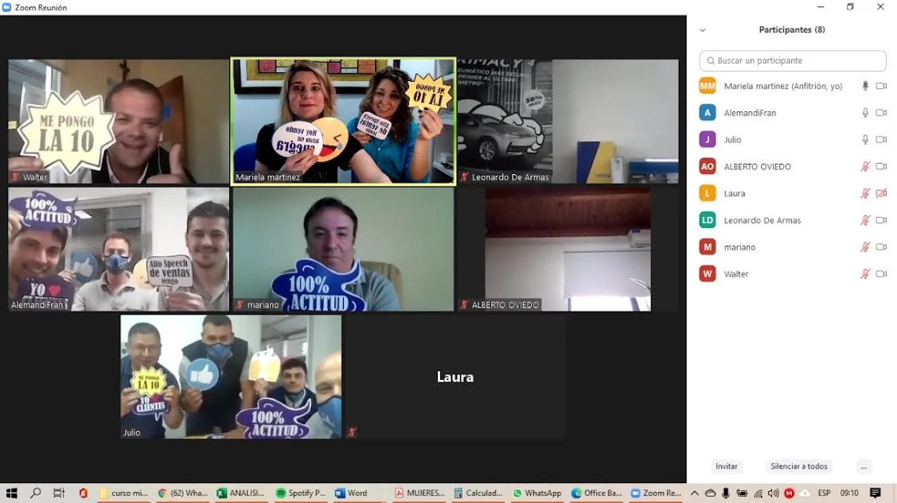

“Me pareció un curso muy dinámico, con nuevos conocimientos para mí.”
Respuesta de participanteExperiencias de trabajo
Procesos reales. Aprendizajes que se pueden observar.
Esta sección reúne experiencias concretas de capacitación, ventas, liderazgo y equipos. Se irá ampliando a medida que incorpore nuevos casos y testimonios autorizados.
Caso destacado
Capacitación y gestión de ventas · Equipo Michelin / Diesel Lange

Capacitación comercial · Equipo distribuido
Entrenar ventas sin perder la participación del equipo.
La capacitación reunió a vendedores conectados desde distintas oficinas. El trabajo combinó contenidos comerciales, participación activa, intercambio entre compañeros y actividades pensadas para llevar lo aprendido a situaciones reales de venta.
Qué apareció en las devoluciones: los participantes valoraron especialmente el dinamismo, la incorporación de nuevos conocimientos y la interacción. También surgió un pedido concreto de continuidad con capacitaciones del mismo estilo.
La voz del equipo
Qué dijeron los vendedores.
“Fue de mucha ayuda y me permite mirar a futuro con mucho más aprendizaje para mi parte laboral.”
Respuesta de participante“Tener más capacitaciones del mismo estilo.”
Respuesta de participante“Seguir con la modalidad de la capacitación, especialmente con la interacción de los participantes.”
Respuesta de participanteResultado observado por la gerencia
El cambio también fue percibido después de la capacitación.
Testimonio de Julio Cabrera · Gerente de Michelin en ese momento
“El impacto de tu trabajo con nuestro equipo se hizo notar de inmediato. El cambio en el ambiente laboral ha sido muy importante. Notamos a un equipo renovado, motivado y con una mentalidad orientada a la resolución de problemas y al servicio al cliente.”
Julio también señaló que ese cambio se reflejó en los resultados comerciales:
“Esto se ve reflejado en nuestros resultados de ventas. Haber logrado impulsar nuestros números y mantener la excelencia operacional en un entorno complejo es un testimonio directo del valor y la efectividad de la formación impartida.”Julio Cabrera
Ambiente laboralEl gerente describió un cambio importante.
ActitudEquipo renovado y motivado.
ClienteMayor orientación a resolver y servir.
VentasLa gerencia vinculó el proceso con una mejora en los resultados.
Cuando una capacitación genera aprendizaje y, al mismo tiempo, ganas de seguir entrenando, el proceso recién empieza.
¿Querés trabajar una situación concreta en tu equipo?
Podemos empezar por una conversación para comprender qué está ocurriendo.